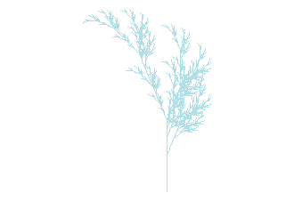

Assignments
Assignment 1
Part 1
Generative art is a form of art which is created using an autonomous system and algorithm through computer generated artwork. The art can be found in various forms like computer visuals, music and literature.
Generative Art Examples:
Catherine Bruner Website - Catherine Bruner, a data scientist, shows how a simple generative art is created step by step. She also has a tutorial site for generative arts using R. Her codes can also be found on her github page. The arts displayed below are all abstract.
Catherine Bruner’s tutorial using R

Mark Stock’s Website - Another generative artist, described how he created his series “FIELD” in his website. Artworks in this series were made using a algorithmic process and a very specific set of instructions. He describes the below piece as his reflection on the hierarchy of currents and eddies in the ocean and their little understood effect on climate change.

Kate Compton’s Flowers - This is just another simple and interactive piece of generative art, that is really cool to look at!
Part 2

Part 3
Critique on a Chart from BBC article:

Just at the first glance, the chart above looks impressive as it has a colorful set of pattern for which the chart overall looks different than a regular line or bar chart. The color selection for the continents are very much appropriate as they are easy to distinguish from each other. By looking at the trend, it can be said that the relationship between the rates of population growth and climate change vulnerability is strong.
However, without the disclaimer, “Circle size represents current population” beside the source of the chart, it would be difficult to interpret the different sizes of the circles. It is also difficult to understand that the different circles represent different cities of their respective continents without actually reading the article. Most of the data points are extremely cluttered and overlapped within each other, hence it looks complex to interpret.
Looking at the original article from the source of the chart, it becomes easy to figure out some room for improvements. The chart could be improved by including more divisions in the climate change vulnerability index (x -axis) to show a less cluttered pattern. For instance, dividing the climate change vulnerability into groups like low risk, medium risk, high risk etc. It could also contain a size guide or comparison for the circles. The population growth could account for negative growths as well.